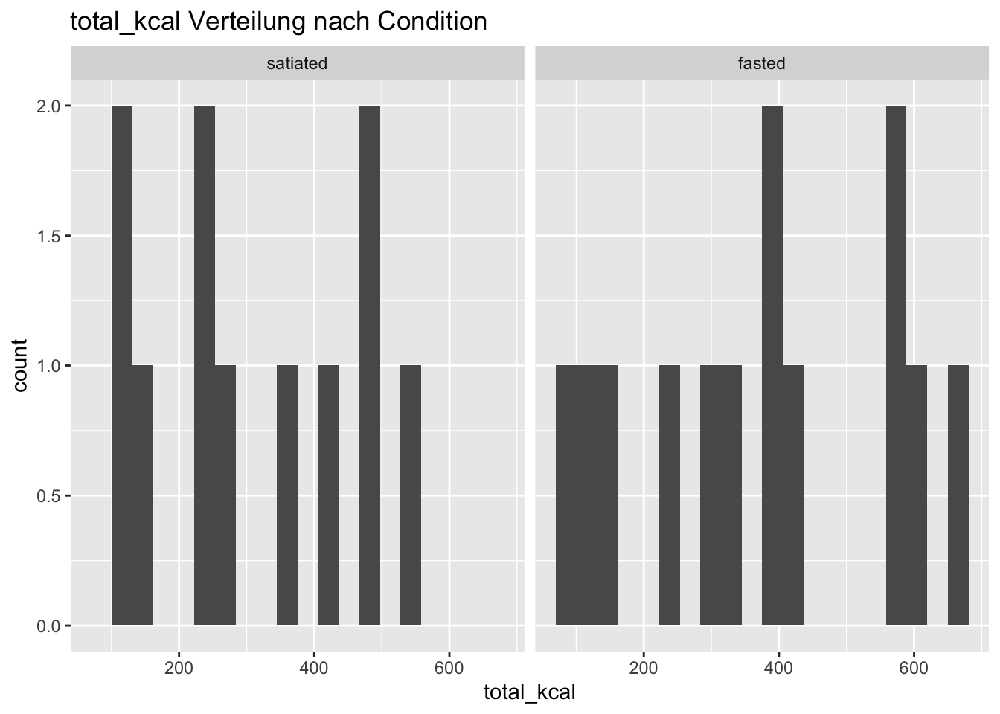
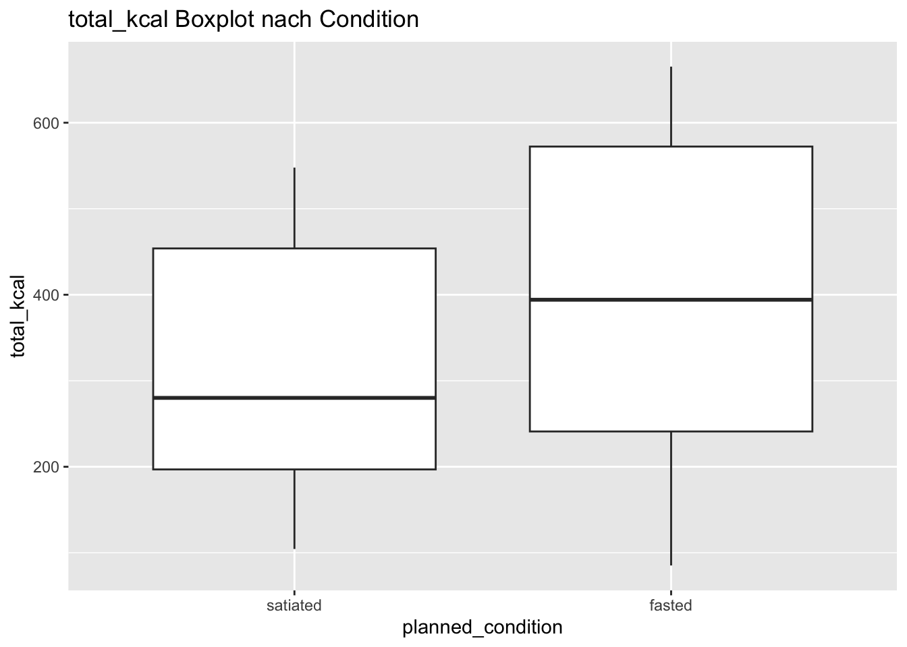
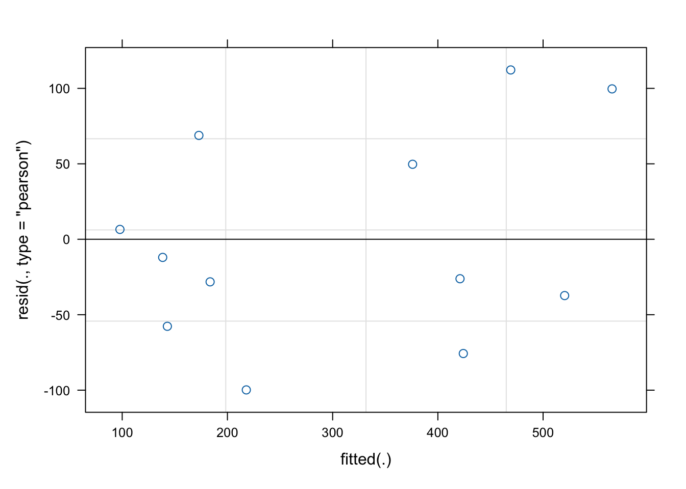

# #install.packages("readr") # schnelles, robustes Einlesen von csv Dateien# #install.packages("readxl") # Einlesen von xlsx Dateien# #install.packages("dplyr") # Datenmanipulation# #install.packages("tidyr") # Umformen von wide zu long, pivot Funktionen# install.packages("stringr") # robuste String Bearbeitung# install.packages("janitor")# install.packages("forcats") # sauberes Faktor Handling# install.packages("purrr") # funktionale Programmierung# install.packages("tibble") # moderne Datenframes mit besserer Ausgabe# install.packages("ggplot2") # Visualisierungen# install.packages("lme4") # lineare gemischte Modelle# install.packages("lmerTest") # p Werte und Tests fuer lmer Modellelibrary(readr) # schnelles, robustes Einlesen von csv Dateienlibrary(readxl) # Einlesen von xlsx Dateienlibrary(dplyr) # Datenmanipulation
Attaching package: 'dplyr'
The following objects are masked from 'package:stats':
filter, lag
The following objects are masked from 'package:base':
intersect, setdiff, setequal, union
library(tidyr) # Umformen von wide zu long, pivot Funktionenlibrary(stringr) # robuste String Bearbeitunglibrary(janitor) # saubere Spaltennamen und Datenchecks
Attaching package: 'janitor'
The following objects are masked from 'package:stats':
chisq.test, fisher.test
library(forcats) # sauberes Faktor Handlinglibrary(purrr) # funktionale Programmierunglibrary(tibble) # moderne Datenframes mit besserer Ausgabelibrary(ggplot2) # Visualisierungenlibrary(lme4) # lineare gemischte Modelle
Loading required package: Matrix
Attaching package: 'Matrix'
The following objects are masked from 'package:tidyr':
expand, pack, unpack
library(lmerTest) # p Werte und Tests fuer lmer Modelle
Attaching package: 'lmerTest'
The following object is masked from 'package:lme4':
lmer
The following object is masked from 'package:stats':
step
valid_id_pattern <-"^sub-\\d+$"
Read data Ich importiere jede Datei einzeln, mache die Spalten maschinenlesbar und erzeuge explizit eine Session Variable, damit ich spaeter sauber zwischen Messzeitpunkt und Bedingung unterscheiden kann.
#wenn ich hier nur sub-xxx sehe ist alle korrekt# --------------------------------------------------# Standardise FASTRESS ID formatting across datasets# --------------------------------------------------food_t1 <- food_t1 |>mutate(fastress_id =str_to_lower(fastress_id))food_t2 <- food_t2 |>mutate(fastress_id =str_to_lower(fastress_id))stress_t1 <- stress_t1 |>mutate(fastress_id =str_to_lower(fastress_id))stress_t2 <- stress_t2 |>mutate(fastress_id =str_to_lower(fastress_id))
Satz für MA: “Non-valid example entries contained in the raw data files were removed prior to data processing based on the predefined participant ID format.”
ID Check
-> prüfen, ob jede Person genau einmal pro Datei vorkommt.
food_t1 |>count(fastress_id) |>filter(n >1)
# A tibble: 0 × 2
# ℹ 2 variables: fastress_id <chr>, n <int>
food_t2 |>count(fastress_id) |>filter(n >1)
# A tibble: 0 × 2
# ℹ 2 variables: fastress_id <chr>, n <int>
stress_t1 |>count(fastress_id) |>filter(n >1)
# A tibble: 0 × 2
# ℹ 2 variables: fastress_id <chr>, n <int>
stress_t2 |>count(fastress_id) |>filter(n >1)
# A tibble: 0 × 2
# ℹ 2 variables: fastress_id <chr>, n <int>
Alle Zeilen sind leer -> Struktur stimmt! Satz für Masterarbeit: “It has been verified that there is exactly one observation per person and session.”
Manipulation check: Stress ratings
stress_all = T1 und T2 untereinander danach checkst du: gibt es Duplikate pro Person pro Session? haben Personen 1 oder 2 Sessions?
# --------------------------------------------------# Stress data: build RAW dataset across sessions# --------------------------------------------------stress_all <-bind_rows(stress_t1, stress_t2)# Quick QC: rows and unique IDsstress_all |>summarise(n_rows =n(),n_unique_id =n_distinct(fastress_id),n_sessions =n_distinct(session) )
# Check: one row per person x session (should be empty)stress_all |>count(fastress_id, session) |>filter(n >1)
# A tibble: 0 × 3
# ℹ 3 variables: fastress_id <chr>, session <chr>, n <int>
# Overview: how many sessions per person existstress_all |>distinct(fastress_id, session) |>count(fastress_id) |>count(n)
Storing counts in `nn`, as `n` already present in input
ℹ Use `name = "new_name"` to pick a new name.
# A tibble: 2 × 2
n nn
<int> <int>
1 1 12
2 2 6
Manipulation check: Goal: show Strong > Mild (and optionally Strong > Baseline) Uses complete cases across sessions (participants with T1 and T2), but does NOT split the test by session.
# 2) Keep participants with data in BOTH sessions (stable paired sample)stress_ids_complete <- stress_all |>distinct(fastress_id, session) |>count(fastress_id, name ="n_sessions") |>filter(n_sessions ==2) |>pull(fastress_id)stress_all_complete <- stress_all |>filter(fastress_id %in% stress_ids_complete)# 3) Define relevant stress rating columns (based on your actual column names)baseline_cols <-names(stress_all_complete) |>str_subset("(?i)(baseline|before_run).*general")mild_cols <-names(stress_all_complete) |>str_subset("(?i)stress_after_run_\\d+_mild$")strong_cols <-names(stress_all_complete) |>str_subset("(?i)stress_after_run_\\d+_strong$")# Safety checks: make sure columns were foundstopifnot(length(mild_cols) >0, length(strong_cols) >0)# Baseline can be optional (depends on your dataset); if none found, we skip baseline testshas_baseline <-length(baseline_cols) >0# 4) Compute indices per person x sessionstress_cols_all <-c(baseline_cols, mild_cols, strong_cols)# Matrix der relevanten Spalten (numerisch)X_all <- stress_all_complete |>select(all_of(stress_cols_all)) |>mutate(across(everything(), as.numeric)) |>as.matrix()missing_prop <-rowMeans(is.na(X_all))# Mild und StrongX_mild <- stress_all_complete |>select(all_of(mild_cols)) |>mutate(across(everything(), as.numeric)) |>as.matrix()X_strong <- stress_all_complete |>select(all_of(strong_cols)) |>mutate(across(everything(), as.numeric)) |>as.matrix()mild_mean <-rowMeans(X_mild, na.rm =TRUE)strong_mean <-rowMeans(X_strong, na.rm =TRUE)# Baseline optionalif (has_baseline) { X_base <- stress_all_complete |>select(all_of(baseline_cols)) |>mutate(across(everything(), as.numeric)) |>as.matrix() baseline_mean <-rowMeans(X_base, na.rm =TRUE)} else { baseline_mean <-rep(NA_real_, nrow(stress_all_complete))}stress_indices_per_session <- stress_all_complete |>transmute( fastress_id, session,missing_prop = missing_prop,baseline_mean = baseline_mean,mild_mean = mild_mean,strong_mean = strong_mean,delta_strong_mild = strong_mean - mild_mean,delta_strong_baseline =if (has_baseline) strong_mean - baseline_mean elseNA_real_ )# 5) OVERALL manipulation check: pool both sessions (do not split by session)# Each row (person x session) contributes one paired comparison strong vs mildstress_overall <- stress_indices_per_session |>filter(!is.na(mild_mean), !is.na(strong_mean))# Descriptives overallstress_overall |>summarise(n_obs =n(),mild_M =mean(mild_mean, na.rm =TRUE),mild_SD =sd(mild_mean, na.rm =TRUE),strong_M =mean(strong_mean, na.rm =TRUE),strong_SD =sd(strong_mean, na.rm =TRUE),delta_SM_M =mean(delta_strong_mild, na.rm =TRUE),delta_SM_SD =sd(delta_strong_mild, na.rm =TRUE) )
Paired t-test
data: stress_overall$strong_mean and stress_overall$mild_mean
t = 3.672, df = 5, p-value = 0.01441
alternative hypothesis: true mean difference is not equal to 0
95 percent confidence interval:
0.9248211 5.2418455
sample estimates:
mean difference
3.083333
Paired t-test
data: stress_overall2$strong_mean and stress_overall2$baseline_mean
t = 4.0601, df = 5, p-value = 0.009728
alternative hypothesis: true mean difference is not equal to 0
95 percent confidence interval:
0.7235522 3.2208922
sample estimates:
mean difference
1.972222
Für den Methodenteil: “A manipulation check was conducted to verify the effectiveness of the stress induction. Subjective stress ratings were assessed during baseline, mild, and strong stress conditions. Mean stress ratings were computed across multiple task runs. For the manipulation check, stress ratings during strong stress conditions were compared to mild stress conditions and baseline ratings.”
Data preparation
Food Dateien zusammenführen
# --------------------------------------------------# Combine food data across sessions (RAW base)# --------------------------------------------------food_all <-bind_rows(food_t1, food_t2)# Quick overview: how many sessions per person exist in food datafood_all |>distinct(fastress_id, session) |>count(fastress_id) |>count(n)
Storing counts in `nn`, as `n` already present in input
ℹ Use `name = "new_name"` to pick a new name.
Long format bedeutet: eine Zeile = eine Beobachtungseinheit Statt viele Messungen in vielen Spalten zu haben, stehen sie untereinander in wenigen Spalten. - ein Item - zu einem Zeitpunkt - für eine Person
Merksatz für MA Methoden: „Food intake data were reshaped into long format to compute item level consumption before aggregation to the session level.“
Spaltennamen der Food Items prüfen
Food Daten von wide zu long umformatieren ($ sagt:Muster muss am Ende des Strings stehen.)
kontrollieren, ob das Format stimmt (also ob ich jetzt columns habe)
konsumierte Gramm berechnen
Pausibility Check
“Food intake was calculated as the difference between the weight of each item before and after the task. Plausibility was ensured by verifying that no post-task weight exceeded the pre-task weight; no negative intake values were observed.” “Outcome variables were computed prior to statistical analyses in order to identify implausible values and ensure data quality. Plausibility checks were based on predefined criteria rather than hypothesis testing. No implausible values were identified for food intake.”
Interpretation: 60 Zeilen -> 0 davon haben einen negativen Kennwert -> kein Item ist unplausibel - Consumed_g = Rohwert - Consumed_g_clean = bereinigter Wert (negative = NA) -> keine negativen Werte vorhanden, deshlab -> clean = raw
In addition to food intake and stress ratings, questionnaire data and blood sampling data were imported to enable manipulation checks and the computation of psychological moderator variables.
# A tibble: 0 × 3
# ℹ 3 variables: fastress_id <chr>, session <chr>, n <int>
Metabolic manipulation check (blood markers)
Define metabolic condition per session (fasted vs satiated)
Jede Person × Session bekommt eine eindeutige Bedingung: -> fasted -> satiated Unabhängig von Session-Reihenfolge, da diese randomisiert war
“For female participants, menstrual cycle phase was monitored and considered during study scheduling. Due to limited statistical power, cycle phase was not included as an explicit factor in the main analyses.”
mutate(…) erstellt Hilfsvariablen, die pruefen, ob Werte in euren vordefinierten Ranges liegen blood_condition: eine Tabelle mit einer Zeile pro Person und Session und der biologisch verifizierten Condition.
count(condition) zeigt, wie viele Sessions als fasted oder satiated klassifiziert wurden count(session, condition) zeigt, wie das ueber T1 und T2 verteilt ist (sollte bei Randomisierung nicht 100% an Session gebunden sein)
planned_condition: eine Tabelle mit der randomisierten Condition, also dem, was im Design vorgesehen war.
Satz für Methodenteil: “Metabolic condition was coded at the session level based on blood glucose and ketone concentrations measured before and after the MRI session. Sessions were classified as fasted or satiated if at least one blood marker per session fell within the predefined range for the respective metabolic state.”
Randomisierungs-Check
prüfen, ob fasted vs satiated ungefähr gleich oft in T1 vs T2 vorkommt.
# ============================================================# Randomisation check: distribution across sessions (T1 vs T2)# ============================================================planned_condition |>count(session, planned_condition)
Ziel: Ueberpruefen, ob die geplante Condition (Randomisierung) mit der biologischen Klassifikation (Blutwerte) uebereinstimmt. Das ist genau das, was du im Methodensatz behauptest.
# Number of mismatchescondition_check |>filter(!is.na(planned_condition), !is.na(measured_condition)) |>mutate(match = planned_condition == measured_condition) |>count(match)
# A tibble: 2 × 2
match n
<lgl> <int>
1 FALSE 6
2 TRUE 18
Ergebnis: Du bekommst eine klare Zahl wie: „X% der Sessions stimmen ueberein“ und eine Tabelle, die zeigt, wo Abweichungen passieren Warum diese Trennung so wichtig ist planned_condition = Designvariable (Randomisierung) → fuer Hauptanalysen blood_condition = Compliance/Manipulation Check → zur Validierung condition_check = Dokumentation, ob die Manipulation wirklich geklappt hat
“Blood glucose and ketone concentrations measured before and after the MRI session were used to verify compliance with the metabolic manipulation. Because classification was based on predefined ranges and required only one marker per session to fall within the respective range, some sessions showed overlap between planned and blood based classification.”
==> Alle Hauptanalysen mit planned_condition durchführen.
# These sessions were retained for all main analyses,# as experimental condition was defined by randomization.
# ============================================================# Blood marker descriptives by planned condition (pre values)# ============================================================# nicht nur „Range erfüllt“ überprüfen, sondern auch grob sehen ob ketones im fasted höher, glucose im fasted tiefer ist.blood_all |>left_join(planned_condition, by =c("fastress_id", "session")) |>filter(!is.na(planned_condition)) |>group_by(planned_condition) |>summarise(n_sessions =n(),ketones_pre_M =mean(ketones_pre, na.rm =TRUE),ketones_pre_SD =sd(ketones_pre, na.rm =TRUE),glucose_pre_M =mean(glucose_pre, na.rm =TRUE),glucose_pre_SD =sd(glucose_pre, na.rm =TRUE) )
Warning: There were 4 warnings in `summarise()`.
The first warning was:
ℹ In argument: `ketones_pre_M = mean(ketones_pre, na.rm = TRUE)`.
ℹ In group 1: `planned_condition = "fasted"`.
Caused by warning in `mean.default()`:
! argument is not numeric or logical: returning NA
ℹ Run `dplyr::last_dplyr_warnings()` to see the 3 remaining warnings.
# A tibble: 2 × 6
planned_condition n_sessions ketones_pre_M ketones_pre_SD glucose_pre_M
<chr> <int> <dbl> <dbl> <dbl>
1 fasted 13 NA 0.296 11.7
2 satiated 11 NA 0.152 34.2
# ℹ 1 more variable: glucose_pre_SD <dbl>
#Survey T1: 20 Zeilen, aber nur 19 eindeutige IDs → eine ID kommt doppelt vor#Survey T2: 6 Zeilen, 6 IDs → oksurvey_t1 |>count(fastress_id) |>filter(n >1)
# A tibble: 1 × 2
fastress_id n
<chr> <int>
1 sub-002 2
survey_t2 |>count(fastress_id) |>filter(n >1)
# A tibble: 0 × 2
# ℹ 2 variables: fastress_id <chr>, n <int>
# A tibble: 1 × 2
fastress_id n
<chr> <int>
1 sub-002 2
# Show the full rows for the duplicated ID(s)dup_ids_t1 <- survey_t1 |>count(fastress_id) |>filter(n >1) |>pull(fastress_id)survey_t1 |>filter(fastress_id %in% dup_ids_t1) |>select(fastress_id, id, submitdate, startdate, datestamp) |>arrange(fastress_id, submitdate)
sub-002 kommt zweimal vor -> beide sind T1 -> den erst ausgefuellten behalten
Pro Person und Session genau eine Zeile behalten -> und zwar die erste ausgefüllte. Die zweite (falsch ausgefüllte T1) wird verworfen.
Die Regel lautet jetzt (wichtig, auch für den Methodenteil): Wenn ein Fragebogen innerhalb derselben Session mehrfach ausgefüllt wurde, wurde die zuerst ausgefüllte Version beibehalten.
# A tibble: 0 × 2
# ℹ 2 variables: fastress_id <chr>, n <int>
Nächster Schritt: Survey T1 und T2 zusammenführen Zuerst Spalten zu gleichen Types machen. Type: Text (character): - Text kann alles darstellen (Zahl, Wort, leer) - du verlierst keine Information
# --------------------------------------------------# Force same types everywhere before bind_rows# --------------------------------------------------# Jede Zelle in Text verwandelnsurvey_t1 <- survey_t1 |>mutate(across(everything(), as.character))survey_t2 <- survey_t2 |>mutate(across(everything(), as.character))# Kontrollcheck für die Problemspalteclass(survey_t1$stim9)
[1] "character"
class(survey_t2$stim9)
[1] "character"
# --------------------------------------------------# Combine survey data across sessions# --------------------------------------------------survey_all <-bind_rows(survey_t1, survey_t2)# sagt mir wie viele Person–Session Kombinationen es gibtsurvey_all |>distinct(fastress_id, session) |>count(session)
# A tibble: 2 × 2
session n
<chr> <int>
1 T1 19
2 T2 6
# Check: one row per person x session -> Erwartung: leersurvey_all |>count(fastress_id, session) |>filter(n >1)
# A tibble: 0 × 3
# ℹ 3 variables: fastress_id <chr>, session <chr>, n <int>
Survey scoring: Trait Moderatoren aus Survey T1 und T2
# ============================================================# Survey scoring: Trait Moderatoren aus Survey T1 und T2# ============================================================# 2) Funktion fuer Skalenmittelwerte (mit Mindestanzahl beantworteter Items)row_mean_safe <-function(df, items, min_n =3) { items <-intersect(items, names(df))if (length(items) ==0) return(rep(NA_real_, nrow(df))) m <- df |>select(all_of(items)) |>mutate(across(everything(), ~ readr::parse_number(str_replace(as.character(.x), ",", ".")))) |>as.matrix() n_nonmiss <-rowSums(!is.na(m)) out <-rowMeans(m, na.rm =TRUE) out[n_nonmiss < min_n] <-NA_real_ out}# 3) Items finden (passen zu clean_names() deiner echten Dateien)items_sses <-names(survey_all) |>str_subset("^sses_sses\\d+$")items_stadit <-names(survey_all) |>str_subset("^stadit_stadit\\d+$")items_cerq <-names(survey_all) |>str_subset("^cerq_cerq\\d+$")# EDEQ Restraint: in deinem Export heissen die Items soedeq_restraint_items <-paste0("edeq01to12_edeq", 1:5)# Mini Check: wurden Items gefundenc(sses =length(items_sses),stadit =length(items_stadit),cerq =length(items_cerq),edeq_restraint =length(intersect(edeq_restraint_items, names(survey_all))))
Ziel dieses Abschnitts: Wissen, wer in welchen Datensätzen vorkommt, bevor du irgendwas mergst oder Analysen machst.
Es sind mehrere Datensaetze: Nicht jede Person hat alles vollständig. –> Deshalb musst man zuerst strukturieren, welche Personen in welchen Daten vorhanden sind.
distinct(fastress_id) bedeutet: Gib mir jede ID nur einmal. Warum? In food_session hat jede Person zwei Zeilen (T1 und T2). Wenn du einfach nrow(food_session) zählst, zählst du Sessions, nicht Personen. -> distinct(fastress_id) macht daraus eine reine Personenliste. Ergebnis: ids_food ist eine Tabelle mit einer Spalte (fastress_id) und einer Zeile pro Person, die Food Daten hat. Gleiches fuer Blood und Survey. Du baust dir damit drei „Teilnehmerlisten“.
# --------------------------------------------------# Sample sizes per dataset# --------------------------------------------------list(food =nrow(ids_food),blood =nrow(ids_blood),survey =nrow(ids_survey))
$food
[1] 18
$blood
[1] 18
$survey
[1] 19
# nrow(...) zählt, wie viele Zeilen eine Tabelle hat.
Überschneidung ansehen -> wichtig: Wer ist in welchem Datensatz?
# --------------------------------------------------# Overlap between datasets# --------------------------------------------------ids_overview <- ids_food |>mutate(in_food =TRUE) |>full_join(ids_blood |>mutate(in_blood =TRUE), by ="fastress_id") |>full_join(ids_survey |>mutate(in_survey =TRUE), by ="fastress_id") |>mutate(across(starts_with("in_"), ~replace_na(.x, FALSE)))
mutate(in_food = TRUE) Bedeutung: Füge eine neue Spalte hinzu, die sagt: Diese Person ist in Food vorhanden. Warum TRUE FALSE? - Weil wir nachher eine Tabelle wollen, wo für jede Person steht: -> in_food: TRUE oder FALSE -> in_blood: TRUE oder FALSE -> in_survey: TRUE oder FALSE
full_join(ids_blood |> mutate(in_blood = TRUE), by = “fastress_id”) Bedeutung: Verbinde die Food Liste mit der Blood Liste, und nimm alle IDs aus beiden. Wichtig: full_join ist hier zentral, weil es alle behalten soll: - Personen, die nur Food haben - Personen, die nur Blood haben - Personen, die beides haben
Nach einem full join sind bei Personen, die z B nicht in Survey sind, die Spalte in_survey erstmal NA. NA heisst: „unbekannt“ oder „fehlt“. Aber wir wollen: Wenn jemand nicht im Survey ist, soll das explizit FALSE sein. Darum: mutate(across(starts_with(“in_”), ~replace_na(.x, FALSE)))
Bedeutung: Wie viele Personen gehoeren zu jeder Kombination? Beispiele: TRUE TRUE TRUE = Personen mit allen drei Datensaetzen TRUE TRUE FALSE = Personen mit Food + Blood, aber ohne Survey TRUE FALSE TRUE = Food + Survey, aber kein Blood
==> wichtig für Ergebnisteil
Outcome Variablen für Food final bauen: kcal und High vs Low
# --------------------------------------------------# Food kcal mapping and aggregation to session level# --------------------------------------------------# Check which food items are present in the long-format dataset# This ensures that all items can be matched to the kcal lookup tablefood_long_raw |>count(item)
# A tibble: 6 × 2
item n
<chr> <int>
1 apple 24
2 cake 24
3 chips 24
4 chocolate 24
5 cracker 24
6 nuts 24
# Create a lookup table containing the energy density (kcal per gram)# and the a priori classification into low- vs high-calorie itemsfood_kcal_lookup <-tibble(item =c("apple", "cake", "chips", "chocolate", "cracker", "nuts"),kcal_per_g =c(0.55, 4.18, 4.98, 5.72, 4.31, 5.83),item_type =c("low", "high", "high", "high", "low", "low"))# Merge food intake data with kcal information and compute energy intake# per item, followed by aggregation to the person-by-session levelfood_session_raw_kcal <- food_long_raw |># Attach kcal per gram and item category to each consumed itemleft_join(food_kcal_lookup, by ="item") |># Compute consumed energy (kcal) per item# Negative or implausible intake values were set to NA beforehandmutate(consumed_kcal = consumed_g_clean * kcal_per_g) |># Aggregate data to one row per participant and sessiongroup_by(fastress_id, session) |>summarise(# Total energy intake across all food itemstotal_kcal =sum(consumed_kcal, na.rm =TRUE),# Energy intake from high-calorie food items onlyhigh_kcal =sum(consumed_kcal[item_type =="high"], na.rm =TRUE),# Energy intake from low-calorie food items onlylow_kcal =sum(consumed_kcal[item_type =="low"], na.rm =TRUE),# Proportion of energy intake derived from high-calorie items# Set to NA if no energy was consumed during the sessionprop_high_kcal =if_else( (high_kcal + low_kcal) >0, high_kcal / (high_kcal + low_kcal),NA_real_ ),# Remove grouping after summarisation.groups ="drop" )# Quality control: verify that all food items were successfully matched# to the kcal lookup table (expected values: 0 missing)food_long_raw |>left_join(food_kcal_lookup, by ="item") |>summarise(n_missing_kcal =sum(is.na(kcal_per_g)),n_missing_type =sum(is.na(item_type)) )
Für den Methodenteil: “Outcome variables were computed independently of experimental condition. Metabolic state (fasted vs. satiated) was subsequently coded at the session level, accounting for the randomized order of experimental sessions.”
Was man macht? Man berechnet, wie viele Personen fuer welche Analyse zur Verfuegung stehen: within Subject Analysen brauchen zwei Sessions pro Person Moderation braucht zusätzlich Moderatorwerte
Wieso man das macht? So weiss man vor dem Modellieren exakt, welches N man verwendet, und man kann es spaeter im Ergebnisteil korrekt berichten.
Anzahl Personen insgesamt Anzahl Personen mit zwei Sessions Anzahl Personen mit gueltigen Moderatorwerten
# Personen mit beiden Sessions (fuer within-subject Analysen)ids_complete <- analysis_session |>filter(!is.na(planned_condition)) |>distinct(fastress_id, session) |>count(fastress_id, name ="n_sessions") |>filter(n_sessions ==2) |>pull(fastress_id)length(ids_complete)
[1] 6
Deskriptive Statistik nach Condition
Was man macht? Man schaut sich die Outcomes (total_kcal, high_kcal, low_kcal, prop_high_kcal) nach planned condition an.
Wieso man das macht? Das ist der erste Plausibilitätscheck fuer den Effekt Man sieht sofort, ob Wertebereiche plausibel sind Man bekommt Tabellen für den Ergebnisteil
Alle sessions (not complete cases) Du beschreibst alle vorhandenen Sessions -> Manche Personen tragen nur eine Session bei -> Das ist ok für einen Ueberblick, aber: fasted und satiated Gruppen bestehen nicht aus denselben Personen Mittelwerte sind nicht direkt vergleichbar => dient als explorativer Überblick
nur complete cases: Jede Person kommt genau einmal in fasted und einmal in satiated vor Die Mittelwerte sind within subject vergleichbar => designkonforme Beschreibung
Satz für Methodenteil: “Primary analyses were conducted on participants with complete data for both experimental sessions, ensuring a within subject comparison of fasted and satiated conditions.”
Basismodell rechnen (Condition Effekt)
Was man macht? Man rechnet das erste Mixed Model: Outcome wird durch planned condition vorhergesagt, mit Zufallsinterzept pro Person.
Wieso man das macht? Das ist das Referenzmodell Es zeigt den generellen Unterschied fasted vs satiated Es ist die Grundlage für spätere Moderationen
Linear mixed model fit by REML. t-tests use Satterthwaite's method [
lmerModLmerTest]
Formula: total_kcal ~ planned_condition + (1 | subject)
Data:
filter(analysis_session, fastress_id %in% ids_complete, !is.na(planned_condition))
REML criterion at convergence: 134
Scaled residuals:
Min 1Q Median 3Q Max
-1.0370 -0.4405 -0.1983 0.5659 1.1657
Random effects:
Groups Name Variance Std.Dev.
subject (Intercept) 34507 185.76
Residual 9266 96.26
Number of obs: 12, groups: subject, 6
Fixed effects:
Estimate Std. Error df t value Pr(>|t|)
(Intercept) 288.312 85.414 6.167 3.375 0.0143 *
planned_conditionfasted 45.070 55.577 5.000 0.811 0.4542
---
Signif. codes: 0 '***' 0.001 '**' 0.01 '*' 0.05 '.' 0.1 ' ' 1
Correlation of Fixed Effects:
(Intr)
plnnd_cndtn -0.325
Outcome Checks und Modellannahmen
Was: Verteilungen der Outcomes anschauen, Nullen und Ausreisser prüfen, dann Residuenchecks für dein Basismodell.
Wieso: Du willst früh sehen, ob zB total_kcal stark schief ist oder ob einzelne Sessions extrem sind. Das beeinflusst Sensitivitätstransformationen und die Interpretation.
# ============================================================# Schritt 8: Outcome checks (Verteilungen, Nullen, Ausreisser)# ============================================================# Outcomes, die du prüfen willstoutcomes <-c("total_kcal", "high_kcal", "low_kcal", "prop_high_kcal")# 8.1 Anteil Nullen pro Outcome (nur Sessions mit Condition)analysis_session |>filter(!is.na(planned_condition)) |>summarise(across(all_of(outcomes), ~mean(.x ==0, na.rm =TRUE), .names ="p_zero_{.col}"))
# 8.4 Quick Plots (optional, aber hilfreich)analysis_session |>filter(!is.na(planned_condition)) |>ggplot(aes(x = total_kcal)) +geom_histogram(bins =20) +facet_wrap(~planned_condition) +labs(title ="total_kcal Verteilung nach Condition")

analysis_session |>filter(!is.na(planned_condition)) |>ggplot(aes(x = planned_condition, y = total_kcal)) +geom_boxplot() +labs(title ="total_kcal Boxplot nach Condition")

Basismodell Diagnostics (m1_complete)
Was: Residuen und Fits prüfen, Einflussreiche Punkte markieren. Wieso: Mixed Models sind relativ robust, aber du willst wissen, ob zB ein einzelner Fall den Effekt treibt.
# ============================================================# Schritt 9: Modellannahmen und Diagnostics fuer m1_complete# ============================================================# 9.1 Residuen vs Fitsplot(m1_complete, which =1)

# 9.2 QQ Plot der Residuenqqnorm(resid(m1_complete))qqline(resid(m1_complete))
Was: Nullmodell vergleichen, Konfidenzintervall für Condition Effekt, grobe Effektgroesse berichten. Wieso: Das brauchst du spaeter 1 zu 1 im Ergebnisteil.